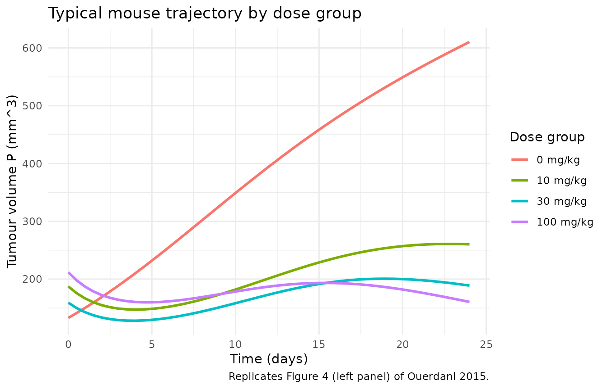
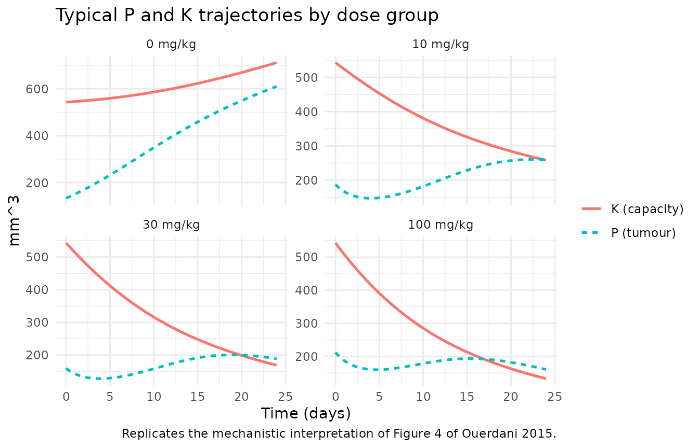
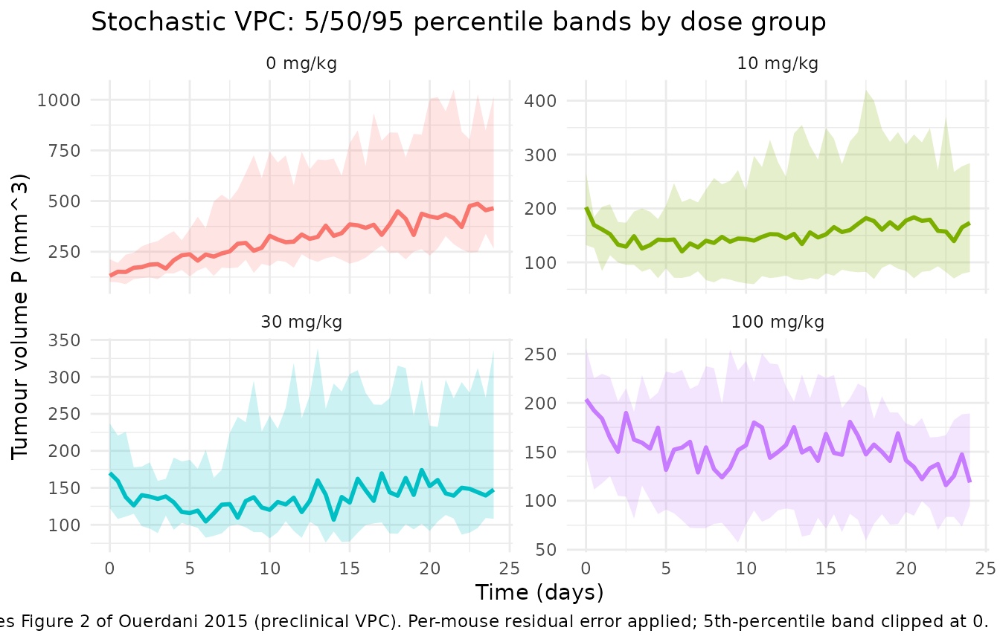

Pazopanib mouse TGI (Ouerdani 2015)
Source:vignettes/articles/Ouerdani_2015_pazopanib_mouse.Rmd
Ouerdani_2015_pazopanib_mouse.RmdModel and source
- Citation: Ouerdani A, Struemper H, Suttle AB, Ouellet D, Ribba B. Preclinical modeling of tumor growth and angiogenesis inhibition to describe pazopanib clinical effects in renal cell carcinoma. CPT Pharmacometrics Syst Pharmacol. 2015;4(11):660-668. doi:[10.1002/psp4.12001](https://doi.org/10.1002/psp4.12001).
- The on-disk PDF is the corrected version of the article (revised online 2015-11-12); the paper’s first-page footnote states that Table 1 was replaced after the initial publication. All parameter values used here come from the corrected Table 1.
This vignette validates the preclinical (mouse, CAKI-2 xenograft) fit
of the semi-mechanistic tumour-growth and angiogenesis-inhibition (TGI)
model. The paired clinical fit lives in
Ouerdani_2015_pazopanib and is covered by a separate
vignette.
Population
Female CB-17 SCID mice, 8-10 weeks old, were inoculated
subcutaneously with RCC CAKI-2 tumour cells. Once tumours had grown to
100-250 mm^3, mice were randomised into four dose groups of 8 animals
each (vehicle, 10, 30, or 100 mg/kg pazopanib once daily by oral gavage
for 24 days), giving 32 animals total. Tumour volumes were measured
twice weekly by handheld caliper and calculated as
(length * width^2) / 2. Source: Ouerdani 2015 Methods,
preclinical-data section.
The same information is available programmatically via
readModelDb("Ouerdani_2015_pazopanib_mouse")$population.
Source trace
Equations from Ouerdani 2015 Methods Equation 1 (preclinical fit with
n = 1); parameter values from the corrected Table 1,
preclinical column. The model has no PK ODE – drug exposure enters as
the per-dose-group covariate AUC_PAZO, sourced from the FDA
Pharmacology Review for pazopanib NDA 022465 (cited in the paper).
| Equation / parameter | Value | Source location |
|---|---|---|
d/dt(tumorSize) |
n/a | Ouerdani 2015 Methods Equation 1 |
d/dt(carryingCapacity) |
n/a | Ouerdani 2015 Methods Equation 1 |
a = a0 * AUC_PAZO^b_a |
n/a | Ouerdani 2015 Methods Equation 2 |
c = c0 * AUC_PAZO^b_c |
n/a | Ouerdani 2015 Methods Equation 3 |
lk_tumor |
log(0.166) |
Table 1 preclinical k = 0.166 (RSE 24%) |
lk_cap (b) |
log(0.0183) |
Table 1 preclinical b = 0.0183 (RSE 58%); IIV fixed to 0 |
lk_aa0 (c0) |
log(0.007) |
Table 1 preclinical c = 0.007 (RSE 29%) |
lk_cyto0 (a0) |
log(0.251) |
Table 1 preclinical a = 0.251 (RSE 13%) |
lk_res (d) |
log(0.196) |
Table 1 preclinical d = 0.196 (RSE 26%) |
lK0 |
log(543) |
Table 1 preclinical K0 = 543 (RSE 15%) |
e_auc_pazo_k_aa (b_c) |
0.332 |
Table 1 preclinical b_c = 0.332 (RSE 15%) |
e_auc_pazo_k_cyto (b_a) |
fixed(0) |
Paper text: ba initially estimated at 0.0002 then fixed to 0 |
n |
fixed(1) |
Methods + Results: best preclinical fit at n = 1 (profile-tested 0.5-3) |
etalk_tumor |
0.2809 (= 0.53^2) |
Table 1 preclinical IIV on k = 53% (RSE 108%) |
etalk_aa0 |
0.0361 (= 0.19^2) |
Table 1 preclinical IIV on c0 = 19% (RSE 127%) |
etalk_cyto0 |
0.0576 (= 0.24^2) |
Table 1 preclinical IIV on a0 = 24% (RSE 96%) |
etalk_res |
0.1764 (= 0.42^2) |
Table 1 preclinical IIV on d = 42% (RSE 103%) |
etalK0 |
0.1296 (= 0.36^2) |
Table 1 preclinical IIV on K0 = 36% (RSE 77%) |
propSd |
0.14 |
Table 1 preclinical e1 = 14% (RSE 23%) |
addSd |
3 |
Table 1 preclinical e2 = 3 mm^3 (RSE 17%) |
AUC_PAZO for 10 mg/kg/day |
220.2 ug*h/mL |
Ouerdani 2015 Methods, citing FDA Pharmacology Review NDA 022465 |
AUC_PAZO for 30 mg/kg/day |
656.8 ug*h/mL |
Same |
AUC_PAZO for 100 mg/kg/day |
1140.8 ug*h/mL |
Same |
Virtual cohort
The CAKI-2 xenograft study used 8 mice per group across four groups
(vehicle, 10, 30, 100 mg/kg pazopanib). The virtual cohort below
reproduces that allocation. Per-mouse baseline tumour volume
(TUM_VOL) is drawn from a uniform distribution over the
paper’s randomisation window (100-250 mm^3); drug exposure
(AUC_PAZO) is held constant per dose group as reported in
the paper.
set.seed(2015)
n_per_group <- 8L
dose_groups <- tibble::tribble(
~dose_mgkg, ~AUC_PAZO,
0, 0,
10, 220.2,
30, 656.8,
100, 1140.8
)
obs_times <- seq(0, 24, by = 0.5) # twice-weekly measurements = ~every 3-4 days
make_cohort <- function(dose_mgkg, AUC_PAZO, id_offset) {
ids <- id_offset + seq_len(n_per_group)
per_subject <- tibble(
id = ids,
TUM_VOL = runif(n_per_group, min = 100, max = 250),
AUC_PAZO = AUC_PAZO,
dose_label = paste0(dose_mgkg, " mg/kg")
)
per_subject |>
tidyr::crossing(time = obs_times) |>
mutate(evid = 0L, amt = 0)
}
events_mouse <- bind_rows(
make_cohort(0, 0, id_offset = 0L),
make_cohort(10, 220.2, id_offset = n_per_group),
make_cohort(30, 656.8, id_offset = 2*n_per_group),
make_cohort(100, 1140.8, id_offset = 3*n_per_group)
) |>
mutate(dose_label = factor(
dose_label,
levels = c("0 mg/kg", "10 mg/kg", "30 mg/kg", "100 mg/kg")
))
stopifnot(!anyDuplicated(unique(events_mouse[, c("id", "time", "evid")])))
nrow(events_mouse); n_distinct(events_mouse$id)
#> [1] 1568
#> [1] 32Typical-value simulation (Figure 4 left panel)
A typical-value simulation (zeroRe(): no IIV, no
residual error) reproduces the mechanistic shape Ouerdani 2015
highlights in Figure 4 (left panel): tumour volume rises monotonically
in vehicle animals (pure logistic growth), declines monotonically at low
pazopanib doses (cytotoxic effect dominates), and shows an initial
decrease followed by limited regrowth at higher doses (the “dual-action”
pattern as the antiangiogenic carrying-capacity reduction kicks in).
mod_mouse <- readModelDb("Ouerdani_2015_pazopanib_mouse")
mod_mouse_typ <- mod_mouse |> rxode2::zeroRe()
#> ℹ parameter labels from comments will be replaced by 'label()'
sim_typ <- rxode2::rxSolve(
mod_mouse_typ,
events = events_mouse,
keep = c("dose_label")
) |>
as.data.frame()
#> ℹ omega/sigma items treated as zero: 'etalk_tumor', 'etalk_aa0', 'etalk_cyto0', 'etalk_res', 'etalK0'
#> Warning: multi-subject simulation without without 'omega'
# Population-typical median per dose group
typ_summary <- sim_typ |>
group_by(dose_label, time) |>
summarise(median_P = median(tumorSize),
median_K = median(carryingCapacity),
.groups = "drop")
ggplot(typ_summary, aes(time, median_P, colour = dose_label)) +
geom_line(linewidth = 1) +
labs(x = "Time (days)", y = "Tumour volume P (mm^3)",
colour = "Dose group",
title = "Typical mouse trajectory by dose group",
caption = "Replicates Figure 4 (left panel) of Ouerdani 2015.") +
theme_minimal()
Plotting the carrying capacity K alongside
P shows the angiogenesis-inhibition mechanism: at zero
exposure the carrying capacity grows unimpeded; under treatment, the
antiangiogenic effect drives K below P and
forces tumour shrinkage.
typ_long <- typ_summary |>
pivot_longer(c(median_P, median_K), names_to = "state", values_to = "value") |>
mutate(state = recode(state, median_P = "P (tumour)", median_K = "K (capacity)"))
ggplot(typ_long, aes(time, value, colour = state, linetype = state)) +
geom_line(linewidth = 0.9) +
facet_wrap(~ dose_label, ncol = 2, scales = "free_y") +
labs(x = "Time (days)", y = "mm^3",
colour = NULL, linetype = NULL,
title = "Typical P and K trajectories by dose group",
caption = "Replicates the mechanistic interpretation of Figure 4 of Ouerdani 2015.") +
theme_minimal()
Stochastic simulation with IIV
Including IIV (etalk_tumor ~ 0.2809,
etalk_aa0 ~ 0.0361, etalk_cyto0 ~ 0.0576,
etalk_res ~ 0.1764, etalK0 ~ 0.1296) and the
combined additive + proportional residual error gives a stochastic VPC
analogous to Figure 2 of the paper (preclinical VPC stratified by
dose).
sim_iiv <- rxode2::rxSolve(
mod_mouse,
events = events_mouse,
keep = c("dose_label")
) |>
as.data.frame()
#> ℹ parameter labels from comments will be replaced by 'label()'
vpc_summary <- sim_iiv |>
group_by(dose_label, time) |>
summarise(
Q05 = quantile(sim, 0.05, na.rm = TRUE),
Q50 = quantile(sim, 0.50, na.rm = TRUE),
Q95 = quantile(sim, 0.95, na.rm = TRUE),
.groups = "drop"
)
ggplot(vpc_summary, aes(time, Q50, colour = dose_label, fill = dose_label)) +
geom_ribbon(aes(ymin = pmax(Q05, 0), ymax = Q95), alpha = 0.2, colour = NA) +
geom_line(linewidth = 1) +
facet_wrap(~ dose_label, ncol = 2, scales = "free_y") +
labs(x = "Time (days)", y = "Tumour volume P (mm^3)",
title = "Stochastic VPC: 5/50/95 percentile bands by dose group",
caption = "Replicates Figure 2 of Ouerdani 2015 (preclinical VPC). Per-mouse residual error applied; 5th-percentile band clipped at 0.") +
theme_minimal() +
guides(colour = "none", fill = "none")
The 8 animals per group in the source dataset produce empirical 5th and 95th percentiles equal to the smallest and largest trajectory respectively; the paper itself notes that “VPC should be interpreted carefully, as the number of mice for each group is small.” The bands above use a 32-mouse virtual cohort (matching the source N) and so display the same wide spread.
Mechanistic sanity checks
This is a tumour-growth ODE model rather than a PK model, so PKNCA-based validation is not the right target (there is no drug-concentration / dose / AUC integration to perform). The mechanistic checks below catch the failure modes that would actually break this class of model.
1. Vehicle = pure logistic growth
At AUC_PAZO = 0, both drug-effect rates a
and c collapse to zero via the model’s
if (AUC_PAZO > 0) gate, and the ODE reduces to the
classical Verhulst-Pearl logistic with an antiangiogenesis-driven
capacity growth term. The simulated vehicle group should therefore show
monotonic tumour expansion across the 24-day window.
veh_typ <- sim_typ |> filter(dose_label == "0 mg/kg")
# Monotonic non-decreasing tumour volume in vehicle (typical-value, no noise).
stopifnot(all(diff(veh_typ$median_P) > 0))
knitr::kable(
veh_typ |> filter(time %in% c(0, 6, 12, 18, 24)),
digits = 3,
caption = "Typical vehicle-arm trajectory (no drug effect, pure logistic growth)."
)| id | time | k_tumor | k_cap | a0 | c0 | k_res | K0 | cyto_rate | aa_rate | ipredSim | sim | tumorSize | carryingCapacity | TUM_VOL | AUC_PAZO | dose_label |
|---|---|---|---|---|---|---|---|---|---|---|---|---|---|---|---|---|
| 1 | 0 | 0.166 | 0.018 | 0.251 | 0.007 | 0.196 | 543 | 0 | 0 | 109.168 | 109.168 | 109.168 | 543.000 | 109.168 | 0 | 0 mg/kg |
| 1 | 6 | 0.166 | 0.018 | 0.251 | 0.007 | 0.196 | 543 | 0 | 0 | 220.976 | 220.976 | 220.976 | 560.692 | 109.168 | 0 | 0 mg/kg |
| 1 | 12 | 0.166 | 0.018 | 0.251 | 0.007 | 0.196 | 543 | 0 | 0 | 361.947 | 361.947 | 361.947 | 592.632 | 109.168 | 0 | 0 mg/kg |
| 1 | 18 | 0.166 | 0.018 | 0.251 | 0.007 | 0.196 | 543 | 0 | 0 | 490.188 | 490.188 | 490.188 | 639.661 | 109.168 | 0 | 0 mg/kg |
| 1 | 24 | 0.166 | 0.018 | 0.251 | 0.007 | 0.196 | 543 | 0 | 0 | 591.517 | 591.517 | 591.517 | 699.261 | 109.168 | 0 | 0 mg/kg |
| 2 | 0 | 0.166 | 0.018 | 0.251 | 0.007 | 0.196 | 543 | 0 | 0 | 225.874 | 225.874 | 225.874 | 543.000 | 225.874 | 0 | 0 mg/kg |
| 2 | 6 | 0.166 | 0.018 | 0.251 | 0.007 | 0.196 | 543 | 0 | 0 | 362.239 | 362.239 | 362.239 | 575.270 | 225.874 | 0 | 0 mg/kg |
| 2 | 12 | 0.166 | 0.018 | 0.251 | 0.007 | 0.196 | 543 | 0 | 0 | 483.346 | 483.346 | 483.346 | 621.940 | 225.874 | 0 | 0 mg/kg |
| 2 | 18 | 0.166 | 0.018 | 0.251 | 0.007 | 0.196 | 543 | 0 | 0 | 578.895 | 578.895 | 578.895 | 680.452 | 225.874 | 0 | 0 mg/kg |
| 2 | 24 | 0.166 | 0.018 | 0.251 | 0.007 | 0.196 | 543 | 0 | 0 | 659.899 | 659.899 | 659.899 | 748.536 | 225.874 | 0 | 0 mg/kg |
| 3 | 0 | 0.166 | 0.018 | 0.251 | 0.007 | 0.196 | 543 | 0 | 0 | 144.792 | 144.792 | 144.792 | 543.000 | 144.792 | 0 | 0 mg/kg |
| 3 | 6 | 0.166 | 0.018 | 0.251 | 0.007 | 0.196 | 543 | 0 | 0 | 271.187 | 271.187 | 271.187 | 565.512 | 144.792 | 0 | 0 mg/kg |
| 3 | 12 | 0.166 | 0.018 | 0.251 | 0.007 | 0.196 | 543 | 0 | 0 | 410.103 | 410.103 | 410.103 | 603.012 | 144.792 | 0 | 0 mg/kg |
| 3 | 18 | 0.166 | 0.018 | 0.251 | 0.007 | 0.196 | 543 | 0 | 0 | 526.596 | 526.596 | 526.596 | 654.697 | 144.792 | 0 | 0 mg/kg |
| 3 | 24 | 0.166 | 0.018 | 0.251 | 0.007 | 0.196 | 543 | 0 | 0 | 619.092 | 619.092 | 619.092 | 717.759 | 144.792 | 0 | 0 mg/kg |
| 4 | 0 | 0.166 | 0.018 | 0.251 | 0.007 | 0.196 | 543 | 0 | 0 | 104.715 | 104.715 | 104.715 | 543.000 | 104.715 | 0 | 0 mg/kg |
| 4 | 6 | 0.166 | 0.018 | 0.251 | 0.007 | 0.196 | 543 | 0 | 0 | 214.135 | 214.135 | 214.135 | 560.062 | 104.715 | 0 | 0 mg/kg |
| 4 | 12 | 0.166 | 0.018 | 0.251 | 0.007 | 0.196 | 543 | 0 | 0 | 354.826 | 354.826 | 354.826 | 591.211 | 104.715 | 0 | 0 mg/kg |
| 4 | 18 | 0.166 | 0.018 | 0.251 | 0.007 | 0.196 | 543 | 0 | 0 | 484.602 | 484.602 | 484.602 | 637.536 | 104.715 | 0 | 0 mg/kg |
| 4 | 24 | 0.166 | 0.018 | 0.251 | 0.007 | 0.196 | 543 | 0 | 0 | 587.314 | 587.314 | 587.314 | 696.605 | 104.715 | 0 | 0 mg/kg |
| 5 | 0 | 0.166 | 0.018 | 0.251 | 0.007 | 0.196 | 543 | 0 | 0 | 120.786 | 120.786 | 120.786 | 543.000 | 120.786 | 0 | 0 mg/kg |
| 5 | 6 | 0.166 | 0.018 | 0.251 | 0.007 | 0.196 | 543 | 0 | 0 | 238.201 | 238.201 | 238.201 | 562.306 | 120.786 | 0 | 0 mg/kg |
| 5 | 12 | 0.166 | 0.018 | 0.251 | 0.007 | 0.196 | 543 | 0 | 0 | 379.243 | 379.243 | 379.243 | 596.200 | 120.786 | 0 | 0 mg/kg |
| 5 | 18 | 0.166 | 0.018 | 0.251 | 0.007 | 0.196 | 543 | 0 | 0 | 503.522 | 503.522 | 503.522 | 644.922 | 120.786 | 0 | 0 mg/kg |
| 5 | 24 | 0.166 | 0.018 | 0.251 | 0.007 | 0.196 | 543 | 0 | 0 | 601.569 | 601.569 | 601.569 | 705.788 | 120.786 | 0 | 0 mg/kg |
| 6 | 0 | 0.166 | 0.018 | 0.251 | 0.007 | 0.196 | 543 | 0 | 0 | 152.978 | 152.978 | 152.978 | 543.000 | 152.978 | 0 | 0 mg/kg |
| 6 | 6 | 0.166 | 0.018 | 0.251 | 0.007 | 0.196 | 543 | 0 | 0 | 281.706 | 281.706 | 281.706 | 566.569 | 152.978 | 0 | 0 mg/kg |
| 6 | 12 | 0.166 | 0.018 | 0.251 | 0.007 | 0.196 | 543 | 0 | 0 | 419.388 | 419.388 | 419.388 | 605.183 | 152.978 | 0 | 0 mg/kg |
| 6 | 18 | 0.166 | 0.018 | 0.251 | 0.007 | 0.196 | 543 | 0 | 0 | 533.388 | 533.388 | 533.388 | 657.749 | 152.978 | 0 | 0 mg/kg |
| 6 | 24 | 0.166 | 0.018 | 0.251 | 0.007 | 0.196 | 543 | 0 | 0 | 624.294 | 624.294 | 624.294 | 721.458 | 152.978 | 0 | 0 mg/kg |
| 7 | 0 | 0.166 | 0.018 | 0.251 | 0.007 | 0.196 | 543 | 0 | 0 | 174.993 | 174.993 | 174.993 | 543.000 | 174.993 | 0 | 0 mg/kg |
| 7 | 6 | 0.166 | 0.018 | 0.251 | 0.007 | 0.196 | 543 | 0 | 0 | 308.366 | 308.366 | 308.366 | 569.326 | 174.993 | 0 | 0 mg/kg |
| 7 | 12 | 0.166 | 0.018 | 0.251 | 0.007 | 0.196 | 543 | 0 | 0 | 441.862 | 441.862 | 441.862 | 610.696 | 174.993 | 0 | 0 mg/kg |
| 7 | 18 | 0.166 | 0.018 | 0.251 | 0.007 | 0.196 | 543 | 0 | 0 | 549.598 | 549.598 | 549.598 | 665.371 | 174.993 | 0 | 0 mg/kg |
| 7 | 24 | 0.166 | 0.018 | 0.251 | 0.007 | 0.196 | 543 | 0 | 0 | 636.811 | 636.811 | 636.811 | 730.631 | 174.993 | 0 | 0 mg/kg |
| 8 | 0 | 0.166 | 0.018 | 0.251 | 0.007 | 0.196 | 543 | 0 | 0 | 111.561 | 111.561 | 111.561 | 543.000 | 111.561 | 0 | 0 mg/kg |
| 8 | 6 | 0.166 | 0.018 | 0.251 | 0.007 | 0.196 | 543 | 0 | 0 | 224.596 | 224.596 | 224.596 | 561.028 | 111.561 | 0 | 0 mg/kg |
| 8 | 12 | 0.166 | 0.018 | 0.251 | 0.007 | 0.196 | 543 | 0 | 0 | 365.656 | 365.656 | 365.656 | 593.383 | 111.561 | 0 | 0 mg/kg |
| 8 | 18 | 0.166 | 0.018 | 0.251 | 0.007 | 0.196 | 543 | 0 | 0 | 493.075 | 493.075 | 493.075 | 640.777 | 111.561 | 0 | 0 mg/kg |
| 8 | 24 | 0.166 | 0.018 | 0.251 | 0.007 | 0.196 | 543 | 0 | 0 | 593.690 | 593.690 | 593.690 | 700.651 | 111.561 | 0 | 0 mg/kg |
2. Drug-effect rates respect the AUC > 0 gate
For any individual with AUC_PAZO > 0 the
per-individual rates cyto_rate and aa_rate are
positive; for vehicle animals they are exactly zero. The gate is what
keeps the cytotoxic rate a = a0 * AUC^0 = a0 from
spuriously acting on vehicle animals in the mouse fit (where the
exponent b_a is fixed to 0 and NONMEM-style
0^0 = 1 would otherwise leave a switched
on).
gate_check <- sim_iiv |>
group_by(dose_label) |>
summarise(any_cyto = any(cyto_rate > 0),
any_aa = any(aa_rate > 0),
.groups = "drop")
knitr::kable(
gate_check,
caption = "Drug-effect rates are zero in vehicle and positive in every drug arm."
)| dose_label | any_cyto | any_aa |
|---|---|---|
| 0 mg/kg | FALSE | FALSE |
| 10 mg/kg | TRUE | TRUE |
| 30 mg/kg | TRUE | TRUE |
| 100 mg/kg | TRUE | TRUE |
3. Dimensional analysis of the ODE
| Term | Units | Reduces to |
|---|---|---|
k_tumor * tumorSize |
1/day * mm^3 |
mm^3 / day |
(1 - tumorSize / carryingCapacity) |
unitless | unitless |
cyto_rate * exp(-k_res*t) * tumorSize |
1/day * unitless * mm^3 |
mm^3 / day |
k_cap * tumorSize^n |
1/day * (mm^3)^1 |
mm^3 / day (mouse n = 1) |
aa_rate * carryingCapacity |
1/day * mm^3 |
mm^3 / day |
Both ODE right-hand sides come out as mm^3 / day,
consistent with d/dt(state) where state is in
mm^3 and t is in days. The mouse fit’s
n = 1 makes k_cap’s units cleanly
1/day; in the paired clinical model n = 0.5 so
k_cap’s units carry an implicit mm^(0.5)
scaling that absorbs the source paper’s preclinical-to-clinical
re-parameterisation.
Assumptions and deviations
-
checkModelConventions()deviations (intentional). Runningnlmixr2lib::checkModelConventions("Ouerdani_2015_pazopanib_mouse")flags four warnings (no errors): (1) thetumorSizecompartment is not on the canonical-compartment list; (2) thecarryingCapacitycompartment is not on the canonical-compartment list; (3) the single-output observation variable should beCc; (4)units$concentrationdoes not contain/(mass / volume) andunits$dosingisn/a. All four are intrinsic to a tumour-volume-dynamics model with no drug-concentration / dosing ODE. The same deviations apply to every other tumour-size-dynamics model in the package (e.g.,tgi_sat_logistic,oncology_xenograft_simeoni_2004,Zecchin_2016_tumorovarian). Tumour volume in mm^3 is not a drug concentration;Ccis reserved for plasma drug concentrations and would be misleading here. The deviations are intentional. -
AUC_PAZO > 0gate added to handle vehicle animals. Ouerdani 2015 fits the mouse model withb_a(AUC exponent on the cytotoxic effect) fixed to 0, which mathematically givesa = a0at any positive AUC and, under the standard NONMEM convention0^0 = 1, alsoa = a0at AUC = 0. That keeps the cytotoxic rate switched on in vehicle animals, contradicting the paper’s vehicle-arm Figure 1 (pure logistic growth, no shrinkage). The nlmixr2lib model file gates both drug-effect rates onAUC_PAZO > 0so that vehicle animals seea = 0andc = 0, recovering the published vehicle-arm trajectory. The paper itself does not publish the source NONMEM control stream, so the exact form of the source author’s vehicle-handling cannot be confirmed; the gate is the simplest interpretation consistent with the reported Figure 1 vehicle trajectory and Equation 1 / Equations 2-3. -
Per-mouse baseline tumour volume drawn uniformly from
100-250 mm^3. The paper sets P0 per-animal from the observed
caliper measurement at randomisation but does not report individual
values. The virtual cohort here draws
TUM_VOLfromUniform(100, 250); switching to a triangular or empirical distribution would shift the per-group dispersion but not the typical-value trajectory. -
AUC_PAZOper dose group is treated as time-fixed. The paper draws each dose group’s mean AUC from the FDA Pharmacology Review for pazopanib NDA 022465; per-animal AUC variability around the group mean is not retained in the model. -
PKNCA validation is omitted. This is a
tumour-volume-dynamics model with no drug-concentration / dosing ODE –
there is nothing for PKNCA to integrate. The vignette substitutes the
mechanistic-sanity checks above (vehicle = pure growth, gate respected,
dimensional analysis), matching the validation pattern other
tumour-volume models in the package use (e.g.,
Zecchin_2016_tumorovarian).